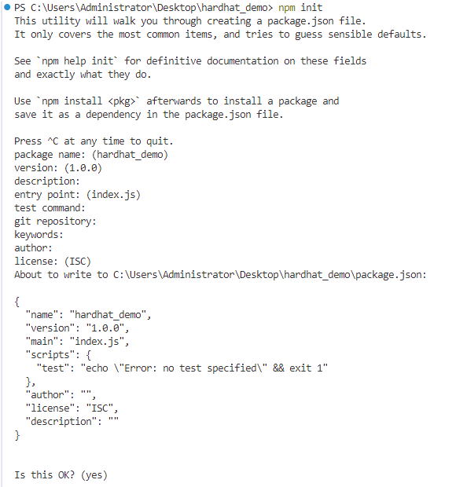
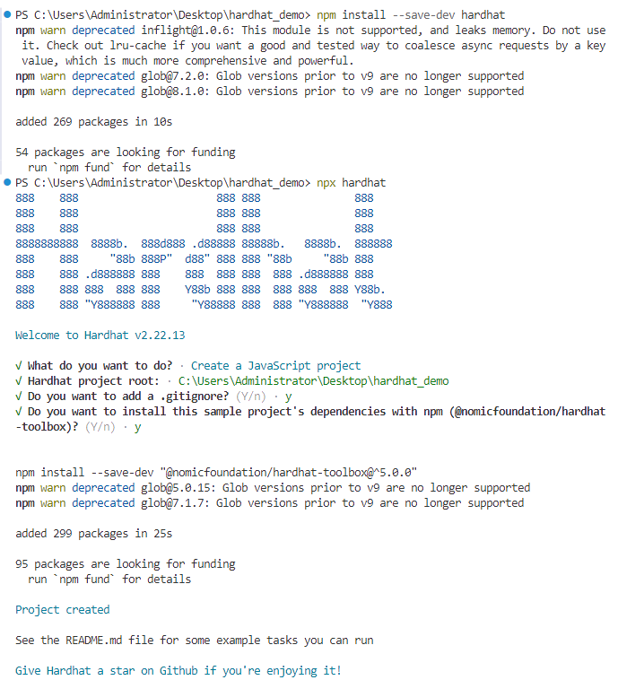
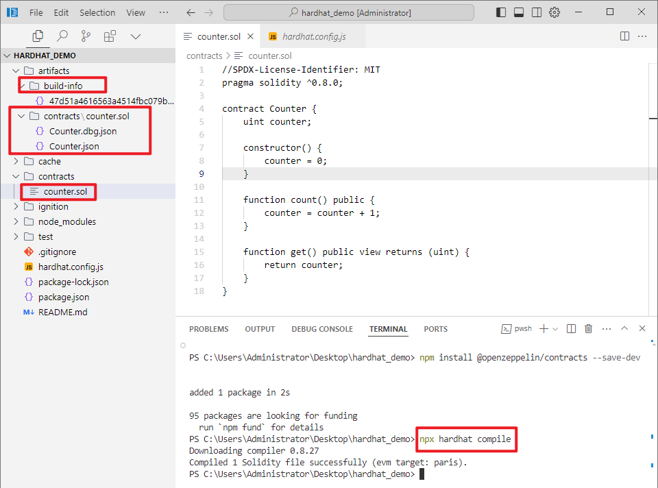
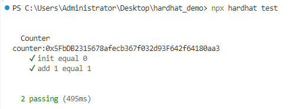
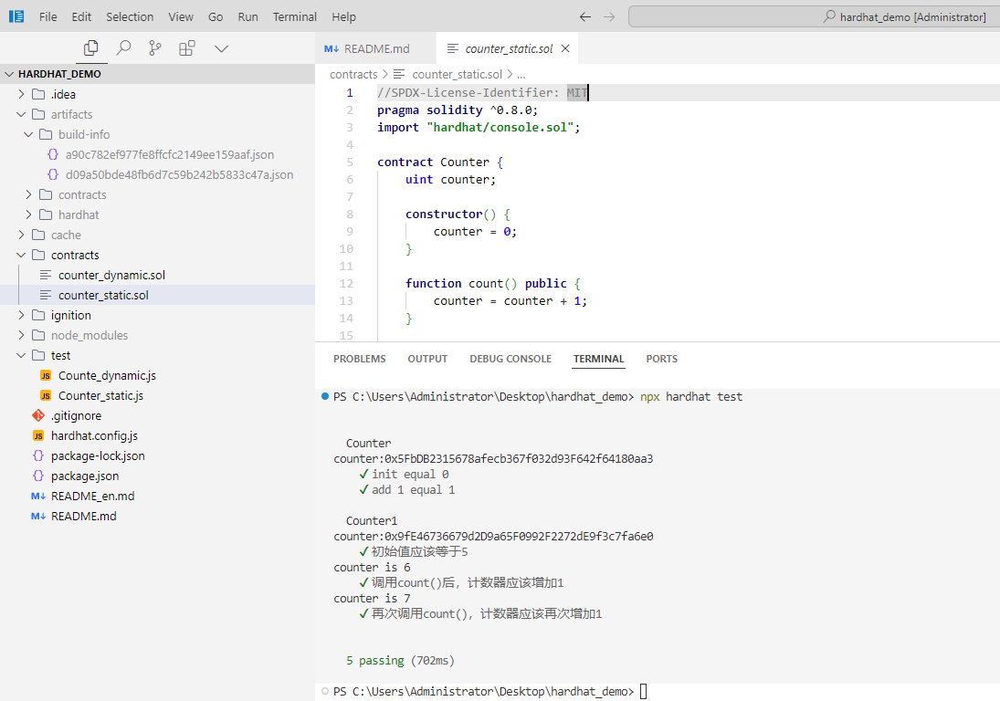

从零开始创建一个Hardhat项目
创建及配置Hardhat项目
Hardhat 构建在 Node.js 之上， 使用 Hardhat 要求我们在电脑先安装好Node.js (>= 16.0)， 环境准备可以参考这里。
先创建项目目录：
mkdir hardhat-tutorial
cd hardhat-tutorial
初始化 Node 项目：
npm init

安装 Hardhat :
npm install --save-dev hardhat
在安装Hardhat的目录下运行：
npx hardhat
使用键盘选择”创建一个 JavaScript 工程（Create a JavaScript project）” ，然后回车。

这个 JavaScript Hardhat 工程会默认下载 hardhat-toolbox 插件及一些常规设置：
创建好的 Hardhat 工程包含下列文件：
contracts：智能合约目录scripts：部署脚本文件test：智能合约测试用例文件夹。hardhat.config.js：配置文件，配置hardhat连接的网络及编译选项。
编写合约
合约开发推荐使用 VSCode / Cursor 编辑器 + solidity 插件，在contracts 下新建一个合约文件 Counter.sol (*.sol 是 Solidity 合约文件的后缀名), 复制如下代码：counter.sol
//SPDX-License-Identifier: MIT
pragma solidity ^0.8.0;
contract Counter {
uint counter;
constructor() {
counter = 0;
}
function count() public {
counter = counter + 1;
}
function get() public view returns (uint) {
return counter;
}
}
接下来就可以编译这个合约了。
编译合约
hardhat.config.js 有默认的Solidity 编译器配置：hardhat.config.js
require("@nomicfoundation/hardhat-toolbox");
/** @type import('hardhat/config').HardhatUserConfig */
module.exports = {
solidity: "0.8.27",
};
因此我们直接编译合约即可，在终端中运行 npx hardhat compile 。 compile任务是内置任务之一。
$ npx hardhat compile
Downloading compiler 0.8.27
Compiled 1 Solidity file successfully (evm target: paris).
合约已成功编译了。
成功编译后，会在 artifacts/contracts/ 目录下生成Counter.json 和 build-info， Counter.json包含了智能合约的 ABI 、字节码（Bytecode）等。
提示
智能合约的 ABI（Application Binary Interface）信息，其中包括了合约的函数、事件等接口信息。这个文件通常会在与其他合约交互时使用，因为它可以被其他合约和 DApp 使用。
Bytecode是部署合约所需的字节码（也称为创建时字节码），部署合约时，就是把该字节码作为交易的输入数据发送链上。

编写测试用例
为智能合约编写自动化测试至关重要，因为事关用户资金。
在我们的测试中，使用 Harhdat 内置的网络，使用ethers.js与前面的合约进行交互，并使用 Mocha 作为测试运行器。
在项目 test下，并创建一个名为Counter.js的新文件：./test/Counter.js
const { ethers } = require("hardhat");
const { expect } = require("chai");
let counter;
describe("Counter", function () {
async function init() {
const [owner, otherAccount] = await ethers.getSigners();
const Counter = await ethers.getContractFactory("Counter");
counter = await Counter.deploy();
await counter.waitForDeployment();
console.log("counter:" + await counter.getAddress());
}
before(async function () {
await init();
});
//
it("init equal 0", async function () {
expect(await counter.get()).to.equal(0);
});
it("add 1 equal 1", async function () {
let tx = await counter.count();
await tx.wait();
expect(await counter.get()).to.equal(1);
});
});
在终端上运行npx hardhat test。 你应该看到以下输出：

这意味着测试通过了。 现在我们解释下主要代码：
const Counter = await ethers.getContractFactory("Counter");
ethers.js中的ContractFactory是用于部署新智能合约的抽象，因此此处的Counter是用来实例合约的工厂。
counter = await Counter.deploy();
在ContractFactory上调用deploy()将启动部署，并返回解析为Contract的Promise。 该对象包含了智能合约所有函数的方法。
let tx = await counter.count();
await tx.wait();
在counter 上调用合约方法， 并等待交易执行完毕。
注意，默认情况下， ContractFactory和Contract实例连接到第一个签名者（Singer）。
若需要使用其他的签名者， 可以使用合约实例connect 到另一个签名者， 如 counter.connect(otherAccount)
expect(await counter.get()).to.equal(0);
判断相等，我们使用Chai，这是一个断言库。 这些断言函数称为“匹配器”，在此实际上使用的“匹配器”来自Hardhat Chai Matchers。
使用 Console.log 调试合约
在Hardhat Node 节点上运行合约和测试时，你可以在Solidity代码中调用console.log()打印日志信息和合约变量，可以方便我们调试代码。
在合约代码中导入Hardhat 的console.log就可以使用它。
import "hardhat/console.sol";
导入语法如上，
本文对应的代码仓库在：https://github.com/ranxi2001/hardhat_demo
文档对应的合约和测试代码可直接在下面链接处复制（需要对应静态和 动态版本——参数构造函数）：
静态版本：
- 合约：
- https://github.com/ranxi2001/hardhat_demo/blob/master/contracts/counter_static.sol
- 测试：
- https://github.com/ranxi2001/hardhat_demo/blob/master/test/Counter_static.js
动态版本：
- 合约：
- https://github.com/ranxi2001/hardhat_demo/blob/master/contracts/counter_dynamic.sol
- 测试：
- https://github.com/ranxi2001/hardhat_demo/blob/master/test/Counte_dynamic.js
就像在JavaScript中使用一样, 将一些console.log添加到函数中，运行测试时，将输出日志记录：

可以在这里了解更多 console.log 。
部署合约
本地部署
其实我们在测试时， 合约已经部署到了Hardhat 内置的网络上，部署合约我们需要编写一个部署脚本。
在scripts文件夹，新建一个deploy.js 用来写部署脚本，部署脚本其实和前面测试时 init 函数类似：
const { ethers } = require("hardhat");
async function main() {
const Counter = await ethers.getContractFactory("Counter");
const counter = await Counter.deploy();
await counter.deployed();
console.log("Counter address:", counter.address);
}
main();
运行 npx hardhat run scripts/deploy.js 时，合约会部署到 Hardhat 内置网络上。
> npx hardhat run scripts/deploy.js
Compiled 1 Solidity file successfully (evm target: paris).
CounterStatic address: 0x5FbDB2315678afecb367f032d93F642f64180aa3
CounterDynamic address: 0xe7f1725E7734CE288F8367e1Bb143E90bb3F0512
链上部署
为了在运行任何任务时指示Hardhat连接到特定的EVM网络，可以使用--network参数。 像这样：
npx hardhat run scripts/deploy.js --network <network-name>
network-name 需要在 hardhat.config.js 文件中进行配置：
配置文件的写法可以参考官网：https://hardhat.org/hardhat-runner/docs/config
require("@nomicfoundation/hardhat-toolbox");
// 填入自己的私钥或助记词，
const PRIVATE_KEY1 = "0x.... YOUR PRIVATE KEY1";
const PRIVATE_KEY2 = "0x.... YOUR PRIVATE KEY1";
const Mnemonic = "YOUR Mnemonic";
module.exports = {
solidity: "0.8.0", // solidity的编译版本
networks: {
goerli: {
url: "https://sepolia.infura.io/v3/<key>",
accounts: [PRIVATE_KEY1,PRIVATE_KEY2],
chainId: 5,
},
mumbai: {
url: "https://endpoints.omniatech.io/v1/matic/mumbai/public",
accounts: {
mnemonic: Mnemonic,
},
chainId: 80001,
},
}
};
以上配置了两个网络，一个是以太坊测试网 goerli， 一个是 Polygon 测试网mumbai， 我们可以在 https://chainlist.org 找到每个网络的节点 URL 及 chainID。
在网络配置中，需要提供钱包交易账户， 可以通过私钥或助记词 进行配置，这里配置的账号（需要提前充币进入到账号中），在hardhat 脚本中（测试及部署脚本）调用getSigners 即可获得：
const [owner, otherAccount] = await ethers.getSigners();
一个私钥对应一个Singer，助记词则对应无数个 Singer ， 为每个项目生成一个独立的账号是比较推荐的做法，使用 ChainTool 开源工具 可以生成账号。
提示
助记词可以推导出无数了私钥，可参考：BIP39
另外要注意， 在 Goerli 上进行部署，需要将Goerli-ETH发送到将要进行部署的地址中。 可以从水龙头免费获取一些测试币，这是Goerli的一个水龙头:
最后运行：
npx hardhat run scripts/deploy.js --network goerli
如果一切顺利，你应该看到已部署的合约地址。
真实的链上部署演示将会在下一篇讲述： Hardhat实战篇——将合约部署到测试网.md
参考文献：
[1] Hardhat 开发框架，DeCert.me，https://decert.me/tutorial/solidity/tools/hardhat/